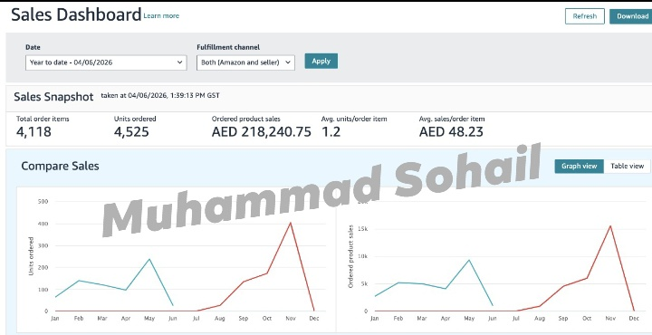

This Amazon UAE case study highlights the impact of strategic execution, marketplace expertise, and data-driven decision-making. Within just six months, the store achieved AED 218,240.75 in sales and successfully delivered 4,525 units, demonstrating strong growth and a scalable business model in the highly competitive Amazon UAE marketplace. These results were driven by a combination of listing optimization, marketplace management, and continuous performance analysis. Every aspect of the account was managed with a focus on improving visibility, increasing conversions, and maximizing profitability. By identifying opportunities through data and implementing effective strategies, the store was able to achieve consistent growth while maintaining operational efficiency. Success on Amazon UAE requires more than simply launching products. It demands continuous optimization, strategic planning, and a deep understanding of customer behavior and market trends. Through ongoing monitoring and informed decision-making, the account experienced steady sales growth and improved overall performance. This milestone reflects the importance of building a sustainable business rather than chasing short-term results. With a strong foundation in place and a proven growth strategy, the focus remains on scaling further, expanding opportunities, and driving long-term success in the Amazon UAE marketplace.